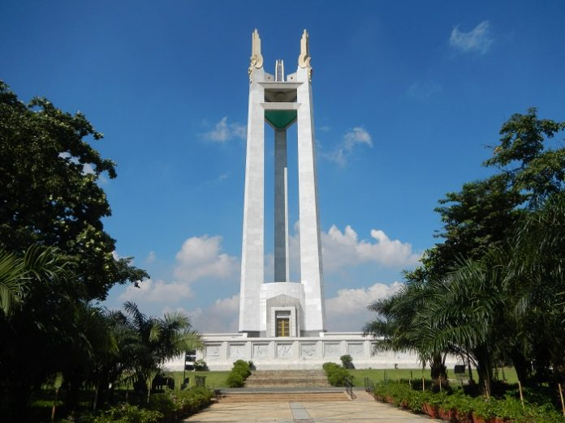
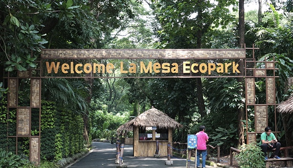
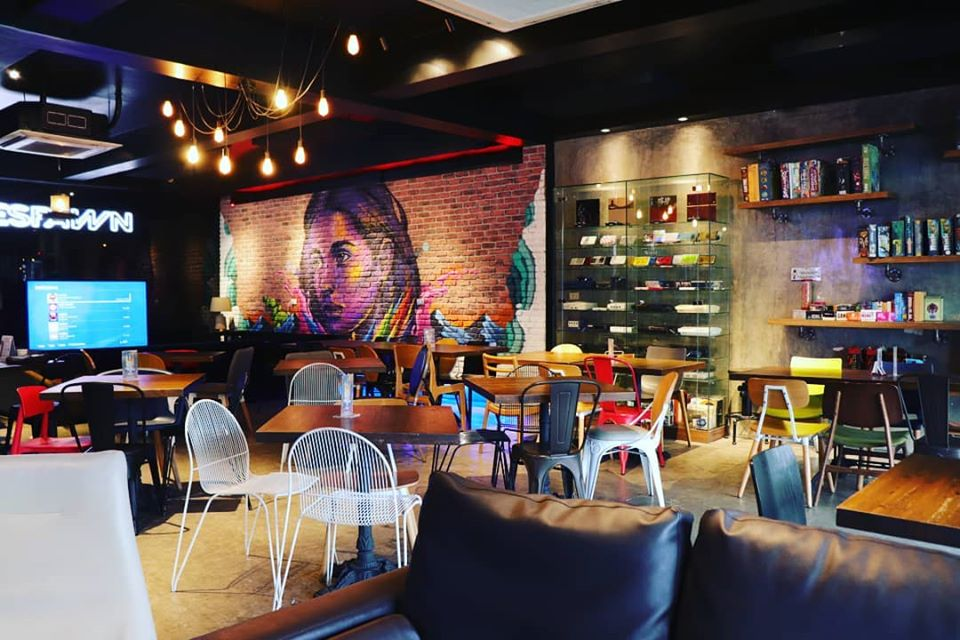
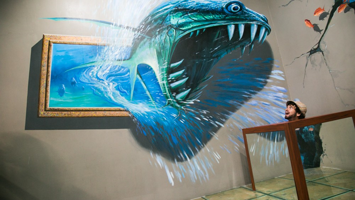

Explore the hustle and bustle of Quezon City, an urban center in
Metro Manila. Find out the easiest way to get into the city, what
attractions and activities to explore, where to stay, and where to
eat and drink if you’re looking for a fun night.

Quezon City's La Mesa Ecopark is a well-developed sanctuary through
a collaboration between MWSS ABS-CBN and Quezon City around the La
Mesa Watershed. The 33-hectare public park is aimed at preserving
and protecting the La Mesa Watershed not only by generating revenue,
but also by fostering environmental awareness and environmental
conservation. The EcoPark's primary focus is on outdoor recreation
and forestry. Students families of environmentalist fitness tourist
buffs flock the park every day, seeing it as an alternative to the
metropolis shopping malls.
GameOver PH is a gaming bar and restaurant that provides you with
the best dining and gaming experience. GameOver offers scrumptious
meals and crafted drinks for a price range of P208 to P624 and
different games like board games consoles and arcades. This place
is best for hanging out with friends and bonding with families.
Their service is top notch because GameOver PH wants to provide
their customers with that "homey" feels. They also host parties
and event celebrations.

Art in Island Museum It was founded by Yun Jae Kyoung together with
a team of 18 Korean master painters who were specially flown in for
the project. They all worked together and created the paintings in
the museum. The museum had over 200 masterpieces including
reproduction of works of masters animals Egyptian ruins and
others—most of them are 3D! These arts give the illusion of depth
when viewed from a certain angle and is designed to serve as a
backdrop for photo opportunities.
